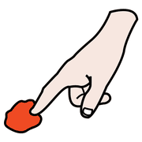
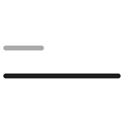

I fondamenti, modulo 2
Percezione e azione
Due canali portano alla conoscenza matematica. Uno segnala, l'altro trasforma: ed è trasformando che si capisce.
segnalare
e trasformare
Due canali
 guardare
guardare
toccare spingere
spingerePercezione
Vista, udito, tatto: segnalano che cosa c'è e dove. Preparano l'azione, ma da soli non bastano a formare un concetto.
Azione
Ogni intervento sulla realtà la modifica e, modificandola, la fa conoscere. L'intelligenza, in fondo, è la capacità di trasformare.
Guardare, ascoltare e toccare non è ancora agire: serve il movimento di tutto il corpo dentro un problema da risolvere.
Quando la percezione inganna

lungo corto
corto uguale
ugualeMolti errori dei bambini non sono errori di ragionamento, ma effetti dell'apparenza: una fila di gettoni più lunga «sembra» averne di più, un bicchiere alto «sembra» contenere più acqua.
Il rimedio non è spiegare meglio, ma far agire: rimettere in fila, travasare, accoppiare, finché il bambino scopre da sé che cosa resta uguale.